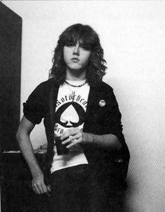

Historia
Primeros contactos
Se considera que la historia de Metallica comenzó en 1980 cuando el joven Lars Ulrich, originario de Gentofte, Dinamarca, se trasladó con su familia a Los Ángeles. Hijo del tenista profesional Torben Ulrich, Lars había desarrollado una enorme afición por el heavy metal durante los años 70, cuando la NWOBHM (Nueva Ola de Heavy Metal Británico) tenía gran auge en la escena underground europea. Con su traslado a Estados Unidos, planeado por su padre con el objetivo original de preparar una carrera dentro del tenis profesional, dicha afición de Ulrich se convertiría prácticamente en una obsesión, que se concentraba especialmente en grupos desconocidos de la nueva corriente inglesa. Su prioridad al llegar a Los Ángeles fue la de explotar su capacidad musical junto con otros jóvenes, lo que le llevó en 1981 a publicar un anuncio en la revista Recycler, en el que solicitaba un guitarrista para formar una banda con influencias de las bandas de la NWOBHM, concretamente sus bandas preferidas: Diamond Head, Iron Maiden y Tygers of Pan Tang. El joven James Hetfield, hijo de un propietario de una compañía de camiones y de una cantante de ópera que educaron a sus hijos en la Ciencia Cristiana, respondió a su anuncio. Comenzaron a ensayar juntos y, aunque al principio a Hetfield no le convencía la forma de tocar de Ulrich, finalmente formaron una banda. La clave de esta unión fue el tema que tenía reservado por parte de su amigo Brian Slagel, fundador de la compañía discográfica, entonces recién creada, Metal Blade Records, en el primer recopilatorio que editaría el sello, titulado Metal Massacre.
El nombre del grupo fue idea de un amigo de Lars llamado Ron Quintana, quien tenía "Metalmania" y "Metallica" como posibles nombres para un nuevo fanzine musical, aunque se inclinaba más por el segundo. A Ulrich le gustó tanto "Metallica" que rápidamente le recomendó (a Quintana) que llamara "Metalmania" al fanzine. Así, la banda de Ulrich y Hetfield tomó el nombre Metallica.
Formación inicial y primeras canciones
Ulrich se trasladó al local que Hetfield poseía junto a su amigo Ron McGovney, el cual provenía de una familia acomodada que poseía numerosas propiedades. Hetfield le pidió a McGovney que tocara el bajo en la banda y se ofreció a enseñarle. Además, Ron fue el diseñador del ya famoso logotipo de la banda. Tras incesantes intentos de conseguir un guitarrista solista influido por Motörhead y Iron Maiden, encontraron a Lloyd Grant, un joven guitarrista afroamericano con quien tocaron la primera demo de Metallica, titulada Hit the Lights (1981). Lloyd, que pensaba quedarse poco tiempo más en la banda, fue al poco tiempo sustituido por Dave Mustaine en la guitarra líder, completando así la primera formación de Metallica, ya que en Mustaine encontraron a la persona ideal para cerrar la formación. El primer paso fue la grabación del tema para la primera entrega de Metal Massacre. El elegido sería "Hit the Lights", tema que provenía de la anterior banda de Hetfield, Leather Charm, considerado uno de los primeros temas del thrash metal.
El debut de Metallica en directo tendría lugar el 14 de marzo de 1982 en el club Radio City de Anaheim, en una actuación en la que la falta de experiencia sobre el escenario ocasionó serios problemas a la banda. Dos semanas más tarde tendrían la oportunidad de enmendar su error abriendo dos noches seguidas para los ingleses Saxon en el local Whiskey-A-Go-Go de Los Ángeles. Cabe decir que dentro del libreto del álbum de versiones que la banda realizó en 1998 titulado Garage Inc pueden encontrarse reproducidas las notas que el propio Ulrich tomó en aquel momento sobre la marcha de estos dos conciertos, incluyendo los setlists de ambas noches y las impresiones del baterista sobre la marcha de las mismas.
La decepción que ocasionó a la banda estos dos malos conciertos hizo que se replanteasen la contratación de un vocalista mientras Hetfield y Mustaine fuesen los dos guitarristas de la banda. Para ello se contrató a Sammy Dijon, ex vocalista de la banda Ruthless, quien realizó algunas pruebas pero que no fue finalmente admitido en el seno del grupo, por lo que fue despedido. En abril de 1982 se contrató a otro guitarrista, Damien Phillips (de nombre real Brad Parker), para actuar como tal mientras Hetfield se concentraba delante del micrófono, pero también fue despedido después de su primera actuación con la banda debido a la negativa de Mustaine a que hubiese un tercer guitarrista. Posteriormente se barajaron varios cantantes, entre los cuales estaban John Bush, futuro vocalista de Armored Saint, y Jesse Cox de Tygers of Pan Tang. Ninguno fue admitido, motivo por el que Hetfield pasó a encargarse tanto de la segunda guitarra como de la voz desde aquel momento. En un ensayo realizado en la antigua escuela de Lars Ulrich, el vocalista fue Jeff Warner, del que se cuenta que no fue aceptado porque desafinaba demasiado.
Formación definitiva
Con la edición de Metal Massacre en el mes de julio de 1982, el grupo, tras renegar de la versión de "Hit the Lights" aparecida en el mismo por encontrarse completamente desfasada de lo que constituía su nuevo sonido, decidió grabar su primer demo, titulado No Life 'til Leather, primera estrofa de la canción Hit the Lights. Siete temas formarían parte de este demo, entre los que se encuentra una versión mucho más potente y acelerada de "Hit the Lights". Con una agenda de conciertos cada vez más ajustada, Hetfield y Ulrich comenzaron a plantearse la sustitución de McGovney. Años después, éste dijo en una entrevista que el resto de la banda le dejaba que se encargara de todo. Es en ese momento cuando empiezan a aparecer los problemas con Dave Mustaine, derivados de un carácter extremadamente violento unido al consumo extremo de alcohol y drogas. Conocedor de la necesidad de Metallica de reclutar un nuevo bajista, Brian Slagel recomienda a Lars y James la banda Trauma, que acababa de editar uno de sus temas en la segunda entrega de Metal Massacre. Hetfield y Ulrich quedarían totalmente impresionados con la destreza y presencia en el escenario de su bajista, Cliff Burton, ofreciéndole inmediatamente el entrar a formar parte de Metallica, lo cual sería inicialmente rechazado por Burton.

Aún con McGovney en sus filas, grabarían el 29 de noviembre del mismo año (1982) un demo en directo en el The Waldorf de San Francisco, que recibiría el nombre de Live Metal Up Your Ass y en la que estrenarían el tema "Whiplash", inédito hasta entonces. El concierto tendría como teloneros a Exodus, cuyo guitarrista líder, un joven Kirk Hammett, causaría una gran impresión en James y Lars Ulrich, que ante los crecientes problemas con Mustaine comenzaron a considerarlo como un reemplazo perfecto. Poco tiempo después McGovney decidió dejar Metallica al oír que habían estado estableciendo contactos con Cliff Burton, para incorporarse a Phantasm, al contrario de la creencia popular de que fue despedido. Posteriormente declaró: "Nunca escuché 'Estás despedido' o algo así de parte de ellos. Yo renuncié, aunque es obvio que, aunque no hubiera renunciado, me iban a despedir de todas maneras". Al mismo tiempo, Cliff Burton, quien estaba teniendo problemas con Trauma debido a la dirección que el resto de los integrantes querían tomar con respecto a su música, decidió pasarse a las filas de Metallica. La única condición no negociable que puso el bajista fue que la banda se trasladase a San Francisco, donde los nuevos sonidos relacionados con el thrash comenzaban a generar una legión de seguidores que recibió el nombre de "Bay Area Bangers". En cualquier caso, Hetfield, Ulrich y Mustaine ya estaban pensando en mudarse a San Francisco, puesto que habían observado la energía y el entusiasmo de la escena thrash de esa ciudad, además de porque la escena de Los Ángeles estaba dominada por el cada vez más famoso glam metal, con bandas como Mötley Crüe y Ratt.
Kill 'Em All
A principios de 1983, el mánager y promotor de conciertos Johnny Zazula (con la ayuda de su mujer) se puso en contacto con el grupo para ofrecerles un traslado a Nueva York, con la idea de organizar varios conciertos en la Costa Este y, si todo marchaba bien, grabar un álbum. Tras aceptar la oferta, Metallica inició el viaje el 1 de abril, y tras atravesar todo el país, fijaron su nuevo lugar de residencia en el Music Building de Nueva York, un edificio en el que cohabitaban con varias bandas de rock, entre las que se encontraba Anthrax, iniciando amistad y camaradería entre los dos grupos.
A los diez días de su llegada a Nueva York, la situación con Mustaine se hizo insostenible, con lo que Hetfield y Ulrich sorprendieron a un Mustaine recién despierto para anunciarle que estaba fuera del grupo y que en un breve plazo salía el autobús que habían reservado para su vuelta a casa (posteriormente Dave fundaría Megadeth). Los integrantes ya estaban preparados para esto. Le pidieron a Zazula que se pusiese en contacto con el guitarrista de Exodus, Kirk Hammett, para unirse a la banda. Al principio, Kirk creía que la llamada de Zazula era una broma, pero finalmente aceptó. De forma simultánea a la expulsión de Dave, Kirk Hammett dejaba Exodus y se disponía a salir hacia Nueva York, llegando esa misma noche a altas horas de la madrugada. Alumno de Joe Satriani, Hammett introduciría un sonido más melódico, técnico y estilizado en Metallica, que se haría patente a partir del segundo álbum del grupo, puesto que el primero estaba compuesto en su totalidad en el momento de su entrada. El debut del nuevo guitarrista tendría lugar en el neoyorquino "Showplace" abriendo para The Rods.
Tras un mes de ensayos, Metallica entraría finalmente el 10 de mayo en los "Music America Studios" para grabar su primer álbum. El tracklisting sería prácticamente igual que el de No Life 'til Leather, incluyendo como novedades el tema "Whiplash", ya aparecido en Live Metal Up Your Ass, y el solo de bajo que Burton solía ejecutar en los conciertos, bajo el nombre de "(Anesthesia) Pulling Teeth". Además, también se incluiría una versión remozada del tema "The Mechanix", añadiendo nuevos riffs y rebautizándola como "The Four Horsemen". La producción correría a cargo de Paul Curcio, propietario de los estudios e ingeniero residente. Su trabajo levantó suspicacias por parte del grupo debido a la diferencia de criterios con respecto al sonido del álbum que quería imprimirle la banda.
Tras seis semanas, el primer trabajo de Metallica sería lanzado en el mes de julio bajo el nombre Kill 'em All. Dicho nombre (Mátalos a Todos) provenía de una frase de Cliff Burton a causa del enfado que produjo en el grupo la negativa de diversas distribuidoras de discos a comercializar el álbum con el título que el grupo quería darle, Metal Up Your Ass (Metal por el culo). Zazula, incapaz de encontrar una compañía discográfica interesada en publicar el disco, optó finalmente por la fundación de un sello propio, Megaforce Records. Se consiguió la cifra de 17.000 copias vendidas en las dos primeras semanas, y sobre todo, Kill 'em All contribuyó notablemente a extender la buena reputación de Metallica, recibiendo una avalancha de críticas favorables por parte de la prensa, que ya comenzaba a verlos como los iniciadores de una nueva corriente en el metal. Posteriormente, la cifra de copias vendidas del disco llegaría hasta las 300.000.18.
Como forma de promoción, Zazula organizaría un tour conjunto con Raven que los llevaría por todo Estados Unidos, constando de 35 fechas y bautizado como Kill 'em All For One Tour (el álbum que Raven se encontraba promocionando se llamaba All For One). Posteriormente, y tras varios conciertos en San Francisco, Nueva York y Boston, y prácticamente coincidiendo con la edición en Europa del single "Jump in the Fire" por parte del sello Music for Nations, el 3 de febrero de 1984 se inició la gira europea Seven Dates of Hell, en la que se encargan de abrir para los ingleses Venom, teniendo como momento cumbre la participación en el Aardshock Festival en Holanda, tocando ante más de 5.000 personas, la audiencia más grande que habían tenido hasta el momento.
Ride The Lightning
Terminada la gira, Metallica entraría el 20 de febrero en los Sweet Silence Studios de Copenhague para la grabación de su segundo álbum, recayendo todo el peso de la producción en el ingeniero residente Flemming Rasmussen, quien ya había trabajado anteriormente con bandas como Mercyful Fate y Rainbow y posteriormente con Sepultura y Blind Guardian. El ajustado presupuesto del que Zazula disponía se convirtió en el principal problema durante la grabación del álbum, que transcurrió a un ritmo frenético durante menos de un mes, quedando finalizada el 14 de marzo, y viéndose solo interrumpida por el fallido tour Hell On Earth junto a The Rods y Exciter, finalmente cancelado por la escasa venta de entradas. A la considerable evolución mostrada en estos temas se unía el rumor latente de que el grupo estaba trabajando en una balada, lo que provocó cierta agitación dentro del sector más extremo de los fanáticos de la banda.
Ride the Lightning, nombre que recibiría finalmente el álbum, supondría un gran cambio en el sonido de la banda, que se adentraba en terrenos mucho más melódicos. Las labores de composición contaron con la colaboración de Burton y Mustaine. También se confirmó el rumor la inclusión de una balada, que recibiría el título de "Fade to Black". Fue escrita por Hetfield inspirándose en el robo de equipo que la banda sufrió el 14 de enero de aquel mismo año (1984).
La primera aparición de la banda en los escenarios tras la grabación tendría lugar en dos sold-out en el londinense Marquee, tras lo cual se harían diversos conciertos en Alemania, Holanda y Bélgica. El momento más importante de este tour llegaría el 3 de agosto en el "Roseland" de Nueva York, donde tendrían un primer contacto con el sello Elektra Records, y en el que, tras el concierto, iniciarían las negociaciones con Peter Mensch y Cliff Burnstein de la agencia Q-Prime, la cual finalmente acabaría comprando el contrato de Metallica a Johnny Zazula. Probablemente es este hecho el que fomentaría las conversaciones de la banda con Elektra, que acabaría fichándolos el 12 de septiembre tras firmar un contrato en el que se otorgaba al grupo el control artístico absoluto sobre su carrera.
El primer movimiento de Elektra tras reclutar a Metallica sería reeditar Ride the Lightning bajo su sello el 19 de noviembre, a la vez que Music for Nations, con la que Zazula tenía un acuerdo aún vigente tras el fichaje por Elektra, edita en Europa el single "Creeping Death", que contendría la suite The Garage Days Re-visited, formada por las versiones "Am I Evil?" de Diamond Head y "Blitzkrieg" de la banda con el mismo nombre. A su vez, se inicia un nuevo tour europeo, esta vez coordinado por Q-Prime con Robert Allen como mánager de la gira, que dio comienzo en la francesa ciudad de Rusen el 16 de noviembre y finalizó en el London Lyceum de Londres el 20 de diciembre tras haber visitado Francia, Alemania, Dinamarca, Suecia, Suiza, Italia, Finlandia e Inglaterra con un enorme éxito de público.
Finalizada la gira europea, y tras un descanso por Navidad, Metallica inició el 11 de enero de 1985 un tour por Estados Unidos y Canadá junto a Armored Saint y los W.A.S.P. de Blackie Lawless, con quienes la banda tuvo varios roces debido al supuesto ego de dicho frontman. Sería durante esta gira cuando la banda comienza a ser conocida como "Alcohólica" por sus excesos con el alcohol. A esto se uniría el cartel que colocaron en dicho autobús, "No se ría, señor. Su hija probablemente esté dentro", que daba una idea de la actitud desenfadada del grupo. Tras más de tres meses en la carretera, la gira tendría su final en el Starry Night Club de Portland.
Master of Puppets y la muerte de Cliff Burton
Pasados dos años de gira, volvieron a los Sweet Silence Studios. De allí surgió Master of Puppets, uno de los discos más alabados dentro del heavy metal, la canción principal homónima está considerada por muchos seguidores de la banda como la mejor de Metallica. El disco ha vendido hasta la fecha más de 7 millones de copias en todo el mundo, a pesar de que solo llegó en su día al puesto 29 del Billboard.
La gira de presentación del disco comenzó en verano de 1986 con el guitarrista rítmico John Marshall, ya que Hetfield se había quebrado la muñeca en un accidente de skateboard. En dicha gira, esta vez en Europa y con Hetfield recuperado, el autobús de la gira circulaba por las carreteras suecas a las 6:15 horas de la mañana del 27 de septiembre; Cliff se encontraba durmiendo en la litera asignada a Kirk Hammett (debido a que este último había perdido en una apuesta), y repentinamente el autobús volcó cerca del pueblo de Ljungby, mientras que Hammett, Ulrich y Hetfield no sufrieron daños físicos preocupantes, el autobús cayó sobre el cuerpo del bajista, tras salir despedido por la ventana, causándole la muerte de forma instantánea. Según el conductor, el autobús derrapó debido a las placas de hielo que había en la carretera, lo que ocasionó el vuelco; Hetfield, furioso por lo sucedido, intentó golpear al conductor, siendo detenido por sus compañeros. Posteriormente recorrió una distancia considerable de la carretera buscando las placas, pero no encontró nada. En el funeral de Burton, se escuchó el tema «Orion».
Su muerte provocó la suspensión de la gira de la banda y la retirada de los tres miembros restantes para pensar al respecto de su futuro. Finalmente, y después de consultar a los familiares del fallecido bajista, decidieron continuar con la carrera musical de la banda, y reclutaron al bajista Jason Newsted de la banda Flotsam and Jetsam, en lugar de Cliff, puesto para el cual también optó Les Claypool entre más de 40 músicos. Al año siguiente la banda volvería a Europa para completar la gira con su nuevo bajista.
En su primera actuación con Metallica, Newsted tocó un solo de bajo, lo que provocó un descontento entre los seguidores de la banda, quienes consideraron esto como una falta de respeto hacia Burton.
Garage Days Re-Revisited y ...And Justice For All
En 1987 lanzarían un gran álbum de versiones de las bandas que les influyeron titulado Garage Days Re-Revisited para introducir a Newsted a los seguidores de la banda. El nombre proviene de las sesiones de grabación de dicho álbum en el garaje de Ulrich. Un año después lanzarían un nuevo disco, titulado ...And Justice for All. Es su álbum más oscuro, con un sonido dominado por ritmos de batería densos y muy acelerados, de gran complejidad. Pese a lo que podría parecer, es un trabajo menos melódico que sus predecesores, con un ambiente negativo, y unas letras más cercanas a la crítica social, política e incluso ecológica ("Blackened"). Destacan los temas "One" (canción con el primer videoclip grabado por la banda, recogiendo escenas de la película Johnny cogió su fusil; con este videoclip, la banda comenzó a ganar fama en el ámbito mainstream, "To Live Is to Die" (dedicado a Cliff Burton basándose en los bocetos de una canción que se encontraba componiendo en la que se oye un poema compuesto por el desaparecido bajista a pesar de ser un tema instrumental), "...And Justice for All" y "Blackened".
Esta producción marcó un hito en el equipamiento de las guitarras de Metallica, ya que dejan sus full stacks valvulares Marshall, pasando a utilizar la Mesa Boogie, obteniendo un sonido mucho más agresivo. Algunas de las escasas críticas que recibió al disco se basan en, a pesar de la evolución, la poca calidad en la producción, señalando el "fino zumbido" de las guitarras, el "clickeo" de la batería, y el escaso volumen que tiene el bajo, el cual casi no se percibe siendo imposible de atisbar en muchos momentos. A pesar de estas características, el álbum ha vendido hasta la fecha más de 8 millones de copias, a pesar de tener una promoción casi nula sin ningún tipo de repercusión en canales de televisión como MTV.
Actuación de Metallica en 1989 en la gira Damage Justice Tour
Gracias a este trabajo, Metallica recibe su primera nominación a los premios Grammy en 1989, en la categoría de Mejor Interpretación Vocal o Instrumental de Hard Rock/Metal. Contra todo pronóstico, el ganador del premio fue el álbum Crest of a Knave de Jethro Tull, quienes no acudieron a la gala. Lars Ulrich se referiría a ellos después de ganar el Grammy en 1992 en la misma categoría por el álbum homónimo de la formación: "Queremos dar las gracias a Jethro Tull por no haber sacado ningún disco este año".
Metallica
Su siguiente trabajo, llamado Metallica pero mejor conocido como The Black Album se publicó en 1991 y contó con la producción de Bob Rock, mejor conocido por su trabajo con Bon Jovi y Mötley Crüe, entre otros. Con canciones como "Enter Sandman", "Holier Than Thou", "Sad But True", "The Unforgiven", "Don't Tread On Me", "Through the Never", "My Friend Of Misery", "The God That Failed", "The Struggle Within", "Of Wolf and Man", "Wherever I May Roam" y "Nothing Else Matters", vendió más de 500 000 copias en su primera semana en Estados Unidos, llegando al primer puesto en la lista del Billboard, en parte gracias a su carácter más comercial. Solo en aquel país, la Recording Industry Association of America (RIAA) certificó catorce millones de copias vendidas desde su lanzamiento. El nombre popular del disco The Black Album (El álbum negro) proviene de la portada, que solo contiene el logo de Metallica en la esquina superior izquierda y el dibujo de una serpiente en la esquina inferior derecha, todo ello sobre un fondo negro. Hetfield explicó posteriormente esta composición y dijo que la banda quería que la gente se fijase en la música que contenía el álbum, y no en el simbolismo ni en el diseño artístico. La canción "Enter Sandman" ocupa el puesto #408 entre las 500 mejores canciones de todos los tiempos en la lista de Rolling Stone.
Posteriormente, la banda realizó la gira Wherever We May Roam Tour, que duró dos años.1 Luego inició otra junto a Guns N' Roses. El 8 de agosto de 1992 en Montreal, Canadá, durante este tour, la actuación de Metallica terminó abruptamente debido a que, durante la canción "Fade To Black", un fuego artificial explotó debajo de James Hetfield provocándole graves quemaduras.5 Asimismo, una afección de garganta del vocalista Axl Rose no le permitió tocar a Guns N' Roses. La breve actuación de Metallica y la cancelación del show de Guns N' Roses provocaron la ira de los fanes, que causaron múltiples destrozos y en los incidentes hubo algunos heridos.
En 1993, la banda editó el box set Live Shit: Binge and Purge, que contiene tres CD y dos conciertos en vídeo grabados en la Ciudad de México, en Seattle y en San Diego. Originalmente fue lanzado como una caja de cartulina como si fuera equipo de un tour. Aparte de los CD y los DVD, la caja contiene material adicional como un libro a color de setenta y cinco páginas.
Load, Reload, Garage Inc. y S&M
Su disco homónimo, conocido popularmente como The Black Album marcaría un punto de inflexión en la carrera musical de Metallica, y sus dos discos consecutivos titulados Load (1996) y ReLoad (1997), de estilos idénticos entre sí ya que estaban pensados para formar un mismo álbum doble, están totalmente dominados por un sonido que muchos antiguos seguidores consideraron como más comercial y muy suavizado con letras más suaves, más cercano al rock alternativo que triunfaba en aquella época. Quizás el cambio más llamativo para sus seguidores fue el cambio de imagen: se cortaron las melenas y cambiaron el fácilmente reconocible logotipo que identificaba a Metallica. Esto se vio también reflejado en el cambio de sello discográfico, ya que las relaciones entre Elektra Records y la banda finalizaron después de casi diez años cobrando solo un 14% de los beneficios netos de Metallica, aunque acabarían reanudando su contrato poco después. El éxito de ambos álbumes no fue tan contundente como el del álbum negro. Muchos adolescentes se convirtieron en seguidores de Metallica, al mismo tiempo que muchos de sus antiguos seguidores se veían en gran medida "traicionados" por la nueva dirección tomada por el grupo, lo que desde entonces lleva alimentando una gran polémica. En los premios Grammy entraron por primera vez en la categoría Heavy Rock en vez de Heavy Metal, como ocurría antes del mencionado Load. Ese mismo año la banda finlandesa Apocalyptica debutó con su homenaje a Metallica Plays Metallica by Four Cellos, que era básicamente un álbum con covers de Metallica tocados únicamente con violonchelos.
En 1998, realizarían un nuevo trabajo similar a Garage Days Re-Visited titulado Garage Inc., aunque esta vez sería un álbum doble de versiones de temas de estilos bastante diversos que influyeron a la banda en su ya dilatada carrera. Mientras que el primer disco incluía covers grabados para el lanzamiento del álbum, el disco dos contenía íntegros el Garage Days Revisited proveniente del single de "Creeping Death", y el Garage Days Re-revisited, además de varias versiones provenientes de caras B y un extracto del concierto de versiones de Motörhead que Metallica dio en el 50 cumpleaños de Lemmy Kilmister el 4 de diciembre de 1995 en el Whiskey-A-Go-Go. El cover "Whiskey in the Jar" de Thin Lizzy resultó ganador de un premio Grammy en la categoría de Mejor Interpretación de Hard Rock en 2000.
Al año siguiente (1999) grabarían en un concierto en directo, titulado S&M, en colaboración con la Orquesta Sinfónica de San Francisco, dirigida por Michael Kamen, quien había hecho los arreglos de orquesta para "Nothing Else Matters" en The Black Album. En este álbum doble se experimenta la mezcla entre música de canciones de Metallica con arreglos orquestales. Además, se presentarían dos nuevos temas especialmente compuestos para la ocasión, "No Leaf Clover" y "- Human", extrayéndose el primero de ellos como segundo single del disco.
Conflictos con Napster
En abril de 2000, Metallica demandó a Napster, la compañía creadora del programa homónimo que permitía el intercambio de música en formato MP3, por violación de los derechos de autor, pues una versión de la canción todavía en proceso para la película Misión Imposible II, "I Disappear", se escuchaba en la radio estadounidense. Dos semanas después, Dr. Dre también demandaba a la empresa. Napster ya había sido acusada por la RIAA en 1999 de violar leyes de propiedad intelectual y servir de asilo para la piratería musical en internet, además de que algunas universidades habían pedido prohibir el programa, pues disminuía la velocidad de sus redes.
Para mayo de 2000, Napster bloqueó las contraseñas de más de 35 mil usuarios proporcionada por Ulrich y que habían obtenido canciones de Metallica. Chuck D., The Offspring, Limp Bizkit y Courtney Love hablaron a favor de Napster y proclamaron la oportunidad que significaba para consumidores y artistas. Para Chuck D., Napster era una reacción, "el fenómeno musical más grande desde los Beatles", "la industria se ha ufanado en guiar a las audiencias; por primera vez los seguidores de la banda han tenido la tecnología antes que la industria".
En su defensa, Napster alegó que servía solo como conducto de la información. En junio de ese año, la RIAA pidió eliminar de Napster todo el contenido perteneciente a las discográficas más importantes. En septiembre del mismo año, Metallica y Dr. Dre enviaron cartas a Harvard, Columbia y otras universidades para que restringieran el acceso al programa. En octubre, Dave Matthews Band se convirtió en el primer grupo en permitir la distribución de una canción vía Napster, con la venía de su compañía.
La polémica cesaría en julio de 2001, al aplazar la banda todas las denuncias contra Napster alegando que estaba haciendo más mal que bien a la imagen del grupo.
St. Anger y Some Kind of Monster
En 2001, el bajista Jason Newsted, quien anteriormente había tenido serias discusiones con los demás integrantes sobre sus proyectos fuera del grupo, abandonaría Metallica alegando desgaste físico y motivos personales. Poco tiempo después, en la controvertida entrevista realizada por Playboy por separado a todos los miembros de la banda varios meses antes, se descubriría que uno de los principales motivos de la marcha del bajista era la rotunda negativa de Hetfield a la publicación del disco de Echobrain, la banda alternativa de Newsted. Tras un largo proceso de selección en busca de sustituto, y en el que se barajaron músicos como Twiggy Ramírez, se contrataría a Robert Trujillo, quien había sido bajista de Suicidal Tendencies, Black Label Society y Ozzy Osbourne en sus actuaciones en directo. Cabe resaltar que Jason Newsted, tras dejar Metallica, perteneció durante un tiempo a la banda de Osbourne, en la que militaba Mike Inez, miembro de Alice in Chains y que también se rumoreó como sustituto. Este mismo año se crea la banda homenaje satírica, Beatallica, la cual fusiona la música de The Beatles y Metallica. Tuvieron un problema legal con Sony, poseedora de los derechos sobre el material de los Beatles, pero fueron ayudados por Lars Ulrich.
Antes de la entrada de Trujillo, la banda había grabado el álbum St. Anger, con Bob Rock nuevamente en el puesto de productor. Este último toca el bajo debido a las dificultades para encontrar un nuevo bajista. Como peculiaridades del disco destaca la ausencia absoluta de solos de guitarra, y un sonido de la batería totalmente novedoso e igualmente polémico que radicaba en la caja, la cual tenía un armónico metálico en vez del de madera seca usado hasta entonces. El vídeo de la canción homónima del álbum fue grabado en la prisión de San Quintin. Hubo otras muchas dificultades en la producción del álbum, debidos a motivos como el proceso de rehabilitación de Hetfield, que se había comenzado a tener problemas con el alcohol después de un viaje a Siberia donde, según él, su única bebida era el vodka.
En el 2004, se lanzaría el documental Some Kind of Monster, que narra la producción del St. Anger en medio de discusiones y problemas luego de la salida de Jason y de la rehabilitación de James Hetfield, de quien ya se conocía su pasión por el alcohol. En el documental hacen aparición Jason Newsted y su banda Echobrain (Lars y Kirk acuden a una de sus presentaciones, se dirigen hacia los camerinos y cuando llegan, Jason ya se había ido) y uno de sus primeros guitarristas del grupo, Dave Mustaine, quien charla con Lars acerca de temas como su estancia en Metallica y su carrera en Megadeth. Dentro del documental, el grupo se apoya de un terapeuta para resolver los problemas previamente mencionados. También se muestran los primeros momentos de Robert Trujillo como bajista de Metallica, incluyendo su audición para entrar al grupo.
Death Magnetic
En el 2006, la banda realizó el tour Escape from the studio, en el que tocaron el disco Master of Puppets entero en conmemoración de su vigésimo aniversario. Durante este tour, la banda tocó dos nuevas canciones: "New Song (Death is not the End)" y "The Other New Song (Vultorous)".
El 4 de diciembre del 2006 fue lanzada una compilación de todos sus vídeos desde 1989 hasta 2004, titulada The Videos. Esta incluye todos sus vídeos desde "One" hasta "Some Kind of Monster" y, como bonus, las dos versiones del vídeo de "One", la versión teatral de "The Unforgiven" de once minutos, el tráiler del documental Some Kind of Monster y además, por primera vez en DVD, la introducción de 2 of One. También Kirk y James aparecieron en el programa Metalocalypse y la banda entera en Los Simpson, quienes además aparecerían en la película Get Thrashed. Un año más tarde, el grupo grabó la versión de Ennio Morricone "The Ecstacy of Gold", el cual apareció en el disco homenaje We All Love Ennio Morricone. Luego, en los meses de junio y julio realizaron la gira Sick Of The Studio 07.
La banda comenzó a grabar el álbum Death Magnetic el 14 de marzo de 2007. Éste cuenta con Rick Rubin como productor, reemplazando a Bob Rock, que había ocupado dicho puesto desde hace más de 15 años. El álbum es finalmente lanzado el 12 de septiembre de 2008. Se han establecido algunas citas para su gira en 2008, y anteriormente, participaron en el Electric Weekend de Getafe, siendo cabezas de cartel junto con Rage Against the Machine.
Además, la banda participó en el álbum homenaje a Iron Maiden Maiden Heaven, interpretando la canción "Remember Tomorrow" junto a bandas como Avenged Sevenfold y Dream Theater. Metallica en la actualidad, ha vendido más de 100 millones de álbumes y posee una estrella en el paseo de la fama en Hollywood.
La página oficial ha confirmado que el grupo ha ocupado un lugar en el Salón de la Fama del Rock, y que fue nominado en dos categorías (Rock Out y Headliner) en los MTV Europe Music Awards así como invitado para tocar en vivo dentro de Los Premios a la Música de Latinoamérica de MTV, los cuales se llevaron a cabo dentro del Auditorio de la Universidad de Guadalajara en Guadalajara, Jalisco, México.
En septiembre del 2008 comienzan la gira mundial World Magnetic Tour, visitando países de Europa, América del Norte, América Central, América del Sur, Asia y Oceanía. Esta gira se extendió hasta noviembre del 2010, recaudando millones de dólares y congregando a millones de fanáticos alrededor de todo el mundo, no sin antes prometer James Hetfield que volverían.
Lulu y Beyond Magnetic
El 31 de octubre de 2011 lanzan el álbum conceptual Lulu con el cantante de Art Rock y rock alternativo Lou Reed, siendo percibido de mal gusto para la mayoría de los fanáticos de la banda.
El 5 de diciembre de 2011 Metallica realizó 4 conciertos en San Francisco celebrando su trigésimo aniversario como grupo, invitando a artistas como Dave Mustaine, Jason Newsted, entre otros. Metallica anunció para finales del año 2011 que sacarían cuatro canciones inéditas pertenecientes a las grabaciones del disco Death Magnetic.
En enero del 2012, después de haber anunciado las cuatro canciones inéditas de las grabaciones de Death Magnetic, se edita un EP titulado "Beyond Magnetic" el cual contiene las cuatro canciones inéditas anunciadas. Este EP en su salida recibió principalmente críticas favorables.
Blackened Recordings, Metallica: Through the Never y concierto en la Antártida
El día 30 de noviembre del 2012 Metallica lanza su propio sello musical, Blackened, en la cual serían publicados sus siguientes trabajos ya sean CD de estudio o álbumes en vivo «Formar Blackened Recordings es lo último en la independencia, que nos da el control del 100% y nos pone en el asiento del conductor de nuestro propio destino creativo» dijo Lars Ulrich en relación al sello, el primer trabajo publicado bajo este sello es el DVD en vivo «Quebec Magnetic».
En agosto de 2013 se estrenó la película 3D Metallica: Through the Never que contó con la actuación de Dane DeHaan mientras que Nimród Antal la escribió y la dirigió. Fue publicada bajo el sello de Blackened Records.
El 8 de diciembre de 2013 la banda realizó un concierto en la base argentina Carlini, para «concienciar sobre la importancia de la Antártida para el planeta». Hubo aproximadamente un centenar de asistentes, incluyendo personal de otras bases cercanas como Uruguay, Chile, Polonia, Corea del Sur, Rusia, Brasil y Alemania. Se siguió un riguroso protocolo sobre impacto ambiental y no se usaron amplificadores durante el recital, el público pudo escuchar a través de auriculares.
«Lords of Summer»
Lars Ulrich en una entrevista hecha por Metal Hammer reveló que la banda planea lanzar un nuevo álbum para finales de 2016 o comienzos del 2017, sin especificar detalles, tan sólo diciendo que el nuevo material «...se siente pesado, enérgico, ruidoso, es veloz, es rock, una locura...». El álbum será vendido bajo el sello discográfico de la banda.
El 20 de junio de 2014 Metallica lanzó su nuevo sencillo «Lords of Summer», el cual estrenaron el 16 de marzo durante una gira por Sudamérica en la ciudad de Bogotá, Colombia [cita requerida] llamada "Metallica By Request", basada en la idea de que los mismos asistentes a los conciertos, meses antes del recital, reciben un código para votar en línea por las canciones que deseaban escuchar. La idea tuvo una gran acogida entre los seguidores de la banda, y la misma gira se extendió hacia América del Sur, Europa y Canadá, visitando por primera vez países como Ecuador y Paraguay, y presentándose dos veces en Buenos Aires, Argentina.
Hardwired... To Self-Destruct
El 18 de agosto de 2016, se dio a conocer el nombre del álbum de estudio llamado Hardwired... to Self-Destruct, el cual fue publicado el 18 de noviembre de 2016.